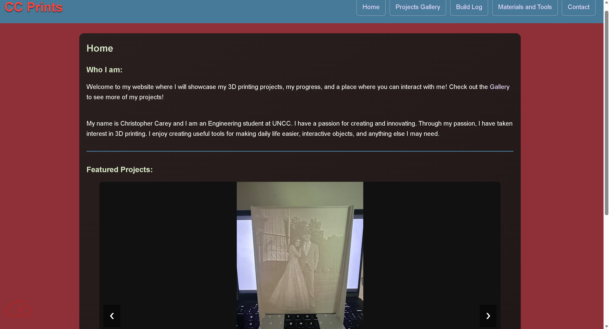

Peer Review 2- Gerard, Emily
Notice: Page may have been edited post-review.

General Submission
Rubric is shown in bold, while the answer is shown in italics
- Your submission leads right to the page to be reviewed
- No, I think someone wrote over it.
- There are no spaces or upper-cases in the file/folder names
- Only .DS_Store
Design
- Page has sufficient contract/font sizing
- Contains WCAG Contrast Errors
- Page has site colors and fonts using the standard .css files
CRAP Principles
- Contrast:
- Contains WCAG Contrast Errors
- Repetition:
- Alignment:
- Proximity:
- I would remove the light gray spacing on Home between Featured Projects and the Photo.
Page has within in
- Header
- Main
- Footer
- Links
- Navbar(optional)
- Header has site/brand header with text in an h1
- Main starts with name of page as an h2 and does not include name of site/brand
- Page has brand tagline somewhere
- No brand tagline
Page has footer with
- Menu for users pages
- No
- HTML validation button
- No
- CSS Validation button
- No
Other Notes
- I like the CC Prints logo
- I would make one header and footer and use JS to implement it on every page, we did this in a previous assignment.
- I would increase the size of the navbar text
- I like the hover effect on the navbar
- I like the hover effect on the navbar